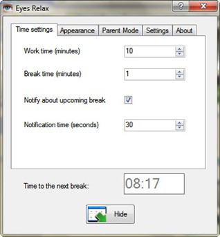
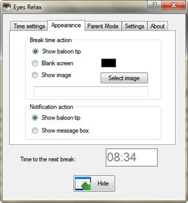
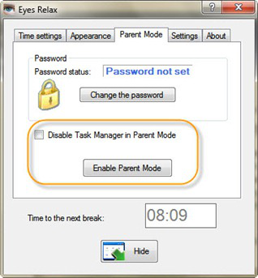
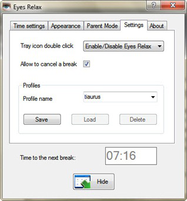

Ну что, опять засиделись за компьютером, да так, что суставы хрустят и голова тяжелая? Так не годится, это надо как-то исправлять. Как минимум нужно делать перерывы в работе, давать глазам отдых, ведь они трудятся весь день! Но проследить за самим собой трудно, тем более заставить себя оторваться от монитора. Взять отдых под контроль поможет Eye Relax.

Программа установит промежутки времени, через которые будет вынуждать Вам делать перерывы. Конечно, эти промежутки могут быть индивидуальными, по-этому у программы есть гибкие настройки.

Когда наступает время дать отдых глазам, программа может безобидно показать напоминание об этом, а может и полностью блокировать компьютер, показав, например, черный экран, либо красивую, расслабляющую картинку.

При чем, как бы Вы не хотели, при соответствующих настройках программа не даст воспользоваться компьютером, потому что можно поставить пароль и запретить закрывать утилиту через диспетчер задач.

Настройки можно сохранять в профилях, переключаясь между ними на лету. Эта программа – отличный способ контролировать время неотрывного просиживания за компьютером.